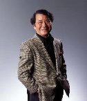

交流会概要 （年４回開催）

スケジュール
日 時 平成18年11月18日（土）
13:30〜 受付開始 14:00 開会
会 場 広島県情報プラザ（広島市中区千田町3−7−47）
講演会 2F 第1会議室
交流会 1F ラ・リヴィエール
参加費 会員 1.000円（第1部・第2部のみの場合は無料）
一 般 3,000円（第1部・第2部のみの場合は1,000円）
定 員 80名（先着順）
14:00〜14:10 主催者あいさつ
広島経済活性化推進倶楽部 理事長 山下 江
（以下略称「経済活性クラブ」＝ＫＫＣ）
14:10〜15:00 第1部 記念講演
15:10〜17:00 第1部 起業家によるプレゼンテーション
数社参加予定
（9月末まで募集中。その後、ＫＫＣ理事による審査あり。）
17:30〜19:00 第3部 交流会
立食パーティを予定
講 師
井浦 幸雄 (中間法人日本エンジェルズ･フォーラム代表理事)
１９４２年東京生まれ。 日本銀行、国際決済銀行を経て、１９９９年秋、「日本エンジェルズ・フォーラム」を結成、代表となる。会員は１０００名を超える。起業家・投資家交流会を２か月に１回実施。２０００年、同フォーラムと連携する日本エンジェルズ・インベストメント株式会社を創業し、これまでに同社を通して、約５０社に投資し、うち２社が上場している。ＫＫＣも加わっている「全国エンジェルズ・フォーラム連合（全ＡＦ連合）」（全国２０カ所）の代表。この８月、日本ＮＢＣ主催第１回ニッポン新事業創出大賞支援部門で優秀賞を受賞。
 
|